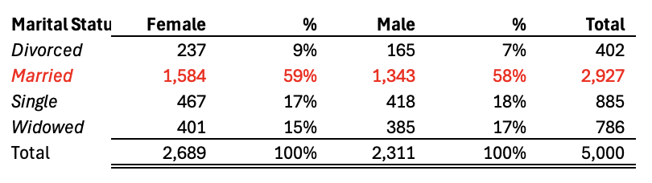
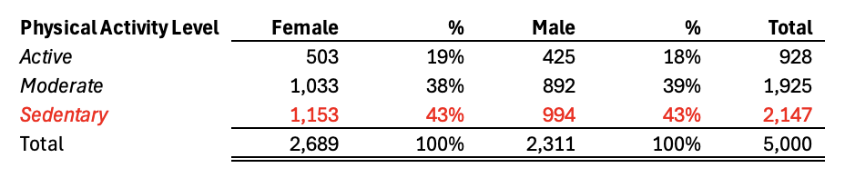
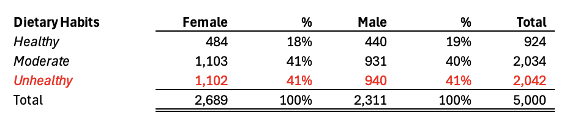

Gender Differences in Depression Factors:
A Statistical Analysis
Research Question
Is there any difference in the factors between men and women having depression?
Objectives
Explore biological, social, and lifestyle factors associated with depression, and compare how they differ across genders.
Methodology
Data Overview
-
This dataset contains information on individuals with various attributes related to their personal and lifestyle factors. It is designed to facilitate analysis in areas such as health, lifestyle, and socio-economic status. The factors in dataset are divided into the following three categories.
-
Biological Factors - Family History of Depression
- Chronic Medical Conditions
- History of Mental Illness
- History of Substance Abuse
Social Environmental Factors - Marital Status
- Education Level
- Number of Children
- Employment Status
- Income
Lifestyle Factors - Smoking Status
- Physical Activity Level
- Alcohol Consumption
- Dietary Habits
- Sleep Patterns
Statistical Analysis
Procedure
| Create pivot tables |
Used Excel pivot tables to identify key factors correlated with depression in men and women by analyzing relationships across variables. |
| Compare data |
Conducted gender-based comparison to examine differences in data distribution both within and between genders. |
| Visualized Results |
Used Excel and Tableau to generate charts and graphs for clear visual representation of findings and insights. |
Results
Among the various factors, the three that have the most significant impact on depression are as follows: Marital Status (Social Environmental Factors), Physical Activity Level (Lifestyle Factors), and Dietary Habits (Lifestyle Factors). It was found that people who are married, those with lower levels of physical activity, and those with poor dietary habits have higher rates of depression.
1.Marital Status
P1 = The proportion of female who get married
P2 = The proportion of male who get married
Ho: P1 - P2 = 0
Ha: P1 - P2 != 0
P-value = 0.33 (>0.05), Do not reject Ho
The result shows that there is no difference between the proportion of female and male.
2.Physical Activity Level
P1 = The proportion of female who have sedentary physical activity level
P2 = The proportion of male who have sedentary physical activity level
Ho: P1 - P2 = 0
Ha: P1 - P2 != 0
P-value = 0.33 (>0.05), Do not reject Ho
The result shows that there is no difference between the proportion of female and male.
3.Dietary Habits
P1 = The proportion of female who have unhealthy dietary habits
P2 = The proportion of male who have unhealthy dietary habits
Ho: P1 - P2 = 0
Ha: P1 - P2 != 0
P-value = 0.33 (>0.05), Do not reject Ho
The result shows that there is no difference between the proportion of female and male.